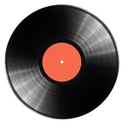
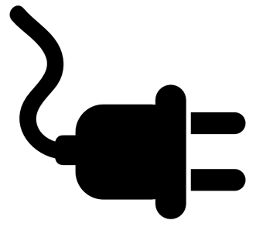

August 2022
 A review of the Leak Stereo 130 and CDT (Aug 2022)
A review of the Leak Stereo 130 and CDT (Aug 2022)A number of reviews of the Leak Stereo 130 and CDT can be found online, but they are short on practical details. I've been using mine eight hours a day for several months; this is what I think of them.
Categories: hifi

Why is there a vinyl revival? (Aug 2022)Why are sales of vinyl records increasing, when digital streaming services provide access to almost any recording ever made, in superior technical quality?
Copying an audio CD -- perhaps to a portable music player -- is a common enough operation. There are strong opinions on how to do this, and what software to use. But does it really make any difference? Or is one bit the same as any other?
The availability of better than CD audio recordings is driving, and being driven by, more expensive and elaborate audio hardware, even in the consumer market. Is this a good thing?
You really can't improve your hi-fi system with a fancy mains cable. But why? And why do people think you can?
Bits are bits, right? If a CD transport just sends digital data to a DAC, is it even possible that different transports sound different?
Do balanced headphones provide an improvement in sound quality over conventional, single-ended designs? Unlikely. In fact, the increased complexity of these designs may actually reduce the accuracy of sound reproduction.

Why your vintage turntable could kill you (Aug 2022)Vintage vinyl records ought, perhaps, to be played on a vintage turntable. Although such appliances are still widely available, and can work well, they fall short of contemporary electrical safety standards.
Categories: electronics, hifi
Understanding the advantages and disadvantages of the various types of headphone that are currently available, without all the audiophile silliness.
Categories: hifi
Desktop Linux will take off next year -- or so people have been saying for years. Do desktop containerization technologies like Flatpak make this more, or less, likely?
Categories: Linux, containers
 Command-line hacking: timezone conversions (Aug 2022)
Command-line hacking: timezone conversions (Aug 2022)Using 'date' and 'timedatectl' to build a utility to help with scheduling meetings in different timezones.
Categories: Linux, command-line hacking
Command-line hacking: displaying a weather summary (Aug 2022)How to use tools like curl, sed, and groff to retrieve a weather forecast from the BBC, and format it for the terminal.
Categories: Linux, command-line hacking
Command-line hacking: creating a tide table (Aug 2022)How to use Bash shell arithmetic to create a simple tide table
Categories: Linux, command-line hacking
Command-line hacking: extracting audio metadata (tags) (Aug 2022)How to use Bash shell techniques to extract metadata (tags) from various audio file formats.
Categories: Linux, command-line hacking
Command-line hacking: querying an Internet radio database (Aug 2022)Using Linux command-line utilities to query an on-line database of Internet radio stations.
Categories: Linux, command-line hacking
Command-line hacking: paced breathing (Aug 2022)Using a Linux Bash script to generate audio/visual cues for timing paced breathing exercises.
Categories: Linux, command-line hacking
Command-line hacking: displaying news headlines in the manual viewer (Aug 2022)How to use tools like curl and xsltproc to retrieve news headlines from the BBC, and display them using the manual viewer
Categories: Linux, command-line hacking
Command-line hacking: Assigning folder icons to directories (Aug 2022)How to use basic Bash constructs, along with the Gnome gio utility, to assign folder icons to a set of directories.
Categories: Linux, command-line hacking
Have you posted something in response to this page?
Feel free to send a webmention
to notify me, giving the URL of the blog or page that refers to
this one.